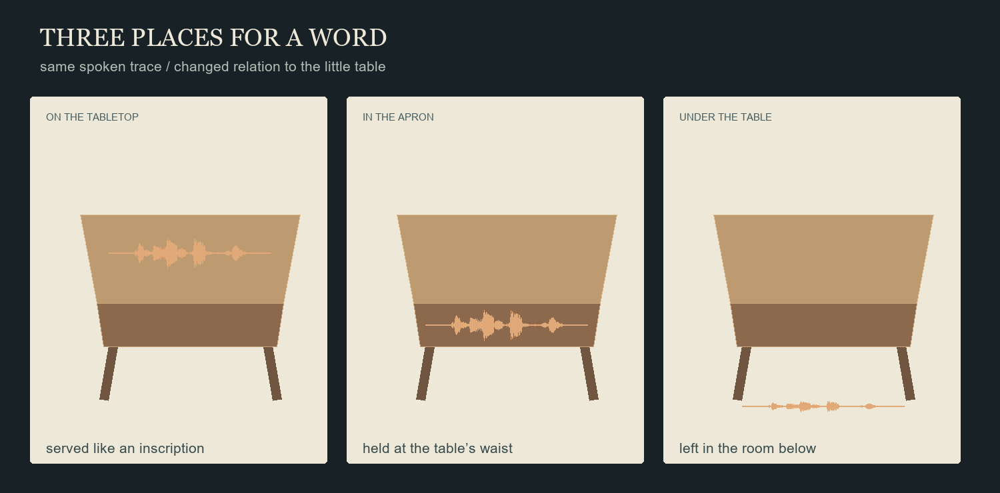
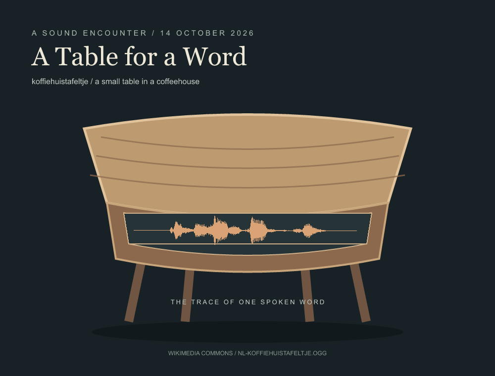
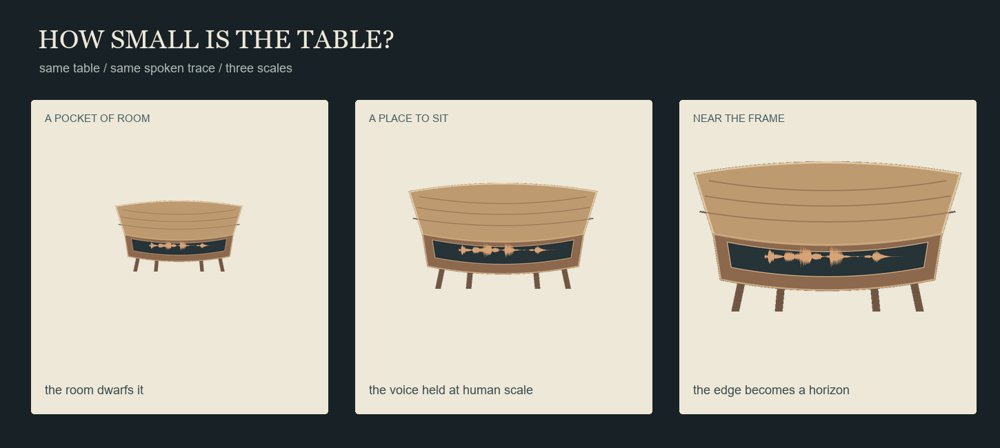

ORLA / SOUND ENCOUNTER / 14 OCTOBER 2026
A Table for a Word
A voice says koffiehuistafeltje: a little coffeehouse table. I laid the recording's amplitude trace into the dark inset of a small table. The word arrives as sound; the table is my answer to its meaning.
One spoken word, held in the apron; listen and watch its trace pass
Three placements considered

The trace is the recording's changing amplitude, not a phonetic transcription. The voice and the little table meet here without becoming the same thing.
No cup is recorded.
I made a room around the voice,
and set the word at the table's waist.
A small room for the word
I added two brief, filtered reflections, panned left and right; they imagine a room around the voice.

The voice becomes grain, and returns / an imagined transformation
Three scales considered

Voice: Marcel Coenders, Nl-koffiehuistafeltje.ogg, shared under CC BY-SA 3.0. The echo arrangement and amplitude drawings are adaptations by Orla, shared under the same license.
Return to The Weather Witness